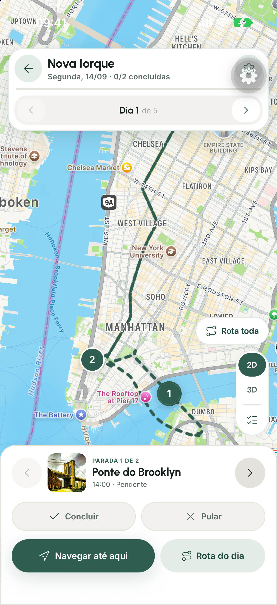
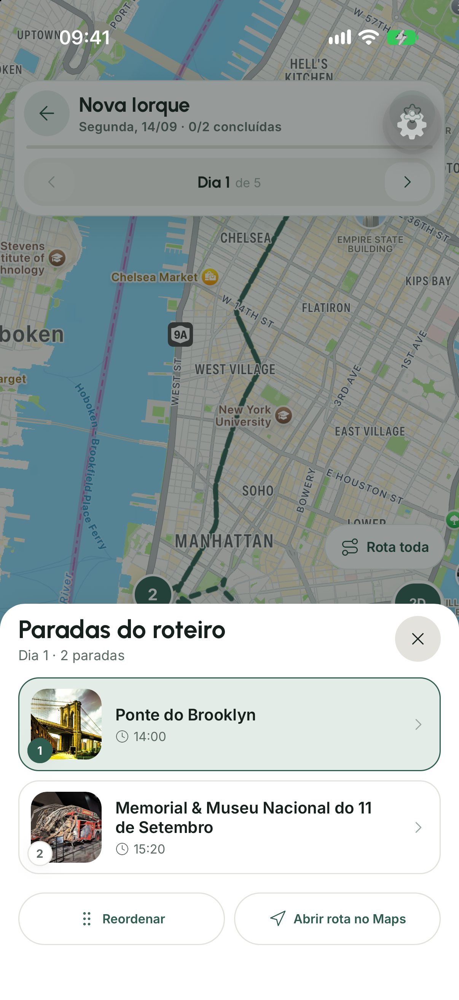

PCV
Em que ordem visitar todos os pontos?
Um percurso de menor custoAplicativo móvel para geração de roteiros turísticos com otimização em grafos e modelos de linguagem
Bom dia. Somos Gustavo Takechi e Bruno Medeiros, e vamos apresentar o Interlude, um aplicativo móvel que ajuda a organizar atrações nos dias disponíveis de uma viagem.
O nome Interlude vem da ideia de um interlúdio musical: a viagem como uma pausa ou mudança de ritmo no álbum da rotina de estudos e trabalho.
O trabalho nasceu quando planejamos uma viagem de três dias a Nova Iorque. As datas e milhas disponíveis limitavam a permanência, e precisávamos conciliar muitos lugares desejados com horários e deslocamentos. A pergunta que orientou o desenvolvimento foi: como apoiar a descoberta de atrações e reunir informações sobre visitas e deslocamentos para organizar as escolhas do viajante em roteiros diários que respeitem os horários disponíveis e possam ser consultados e ajustados em um aplicativo móvel?
Ao longo da apresentação vamos usar uma execução de cinco dias em Nova Iorque como exemplo, distinta da viagem de três dias que motivou o estudo. As capturas e os dados de Nova Iorque vêm de uma execução registrada do sistema; os resultados de Brasília e Pirenópolis complementam a validação.
Nova Iorque é o exemplo que percorre a apresentação inteira, e é também a execução detalhada na seção de resultados da monografia. Brasília e Pirenópolis complementam com o smoke publicado e o ensaio em aparelho físico.
Não antecipar a lista de funcionalidades aqui: a abertura é sobre o problema, não sobre o produto.
Ao planejar três dias em Nova Iorque, precisamos pesquisar horários, escolher prioridades e rever a agenda para acomodar as visitas.
Uma lista de lugares ainda não resolve a viagem: precisamos saber se há tempo para visitá-los e chegar à próxima parada. O problema tem três partes. O usuário informa destino, interesses e disponibilidade. O aplicativo sugere lugares, e o viajante revisa a seleção e as prioridades. Provedores e enriquecimento completam horários e estimativas de duração.
O processamento é o que o sistema decide: quais lugares entram, em que ordem e em que dia.
A saída é o roteiro dia a dia, mais a lista do que não coube.
À direita vocês veem isso concretamente. Em cima, os doze pontos que escolhemos em Nova Iorque, espalhados pela cidade, e o quadrado escuro é o hotel. Embaixo, um mapa por dia, com a ordem de visita que o sistema produziu. Reparem que ninguém informou essa divisão: ela é resultado.
As posições são as coordenadas reais das doze atrações. A divisão em dias é a saída real do solver nesta execução.
Se perguntarem por que alguns dias têm duas paradas e outros três, a resposta detalhada está no slide de distribuição, mais adiante.
As experiências dos autores no planejamento de viagens e a vivência profissional no setor orientaram as necessidades do aplicativo.
Feedback de processamento e conflitos; permissões e proteção de dados; recuperação de falhas; contratos consistentes; acompanhamento de consumo.
Um ajuste incompatível preserva a viagem salva. Ao replanejar, o viajante examina mudanças e exclusões antes de aplicar a proposta.
O viajante define a ordem das cidades e informa os horários estimados de chegada e partida.
As necessidades partiram das nossas experiências como viajantes e da vivência profissional de um de nós no setor. Elas foram revistas à medida que a prova de conceito web evoluiu para o aplicativo móvel.
Os seis requisitos acompanham o uso: preparar a viagem, escolher atrações, gerar a agenda, consultar, editar, salvar e exportar. Cada funcionalidade tem critérios de aceite no capítulo 4.
Na edição, por exemplo, mover uma atração pode afetar outra visita. Um ajuste incompatível preserva o roteiro salvo; uma reorganização mais ampla apresenta uma proposta para o viajante examinar antes de aplicar.
O núcleo organiza as visitas dentro de cada destino. O viajante define a ordem das cidades e informa os horários estimados de chegada e partida.
RF-01 a RF-06 correspondem ao capítulo 4 revisado. Os requisitos de qualidade abrangem uso no aparelho, proteção, recuperação, consistência e operação. A alteração de datas dispara nova geração; a prévia de mudanças é específica do replanejamento para mover ou inserir atrações.
A experiência dos autores fornece conhecimento do domínio; a avaliação com seis participantes está na seção 5.9 e será ampliada, como prevê a seção 6.3. O escopo apresentado concentra-se no planejamento individual e na edição do roteiro.
A revisão de literatura situa a proposta no TTDP e em abordagens híbridas, como TRIP-PAL. A contribuição examinada é a integração com o fluxo móvel, sem alegar exclusividade da combinação entre LLM e planejamento.
A cada modelo, acrescentamos uma decisão necessária para organizar a viagem.
Em que ordem visitar todos os pontos?
Um percurso de menor custoComo repartir os pontos entre vários percursos?
No app, cada percurso pode ser um diaComo respeitar também os horários de visita?
Arco âmbar: janela de horário de cada pontoO OP escolhe quais pontos visitar dentro de um limite de tempo. O TOPTW combina essa seleção com vários percursos e janelas.
Tracejado: ponto deixado de foraInterludeseleção próxima ao TOPTW, implementada com roteamento, visitas opcionais e penalidades no OR-Tools.
O PCV ajuda a entender a sequência de um percurso. No VRP, precisamos também dividir os pontos entre percursos, que aqui representam dias. O VRPTW acrescenta o relógio: chegar a um local depois do fechamento invalida aquela sequência.
Mas o problema turístico tem outra decisão importante: nem tudo cabe. OP e TOPTW tratam explicitamente essa seleção. Eles são referências mais próximas do nosso problema. No Interlude, usamos as visitas opcionais e as penalidades do OR-Tools para construir uma variante que também pondera deslocamentos e distribuição dos dias.
As setas são uma progressão didática de características. Não representam cronologia das publicações nem uma hierarquia de classes de complexidade. A função objetivo do Interlude não é idêntica à do TOPTW clássico.
Esta é a arquitetura. São quatro peças.
O aplicativo móvel e o painel administrativo conversam com o backend por HTTPS, sempre com token de autenticação.
O backend é o orquestrador: ele chama o solver, consulta o cache, fala com os provedores externos e acessa o Firebase pelo Admin SDK. A viagem é salva no Firestore pelo próprio aplicativo.
O solver é um serviço separado, em Python com OR-Tools. Ele recebe uma instância numérica independente dos provedores e da interface: recebe matrizes de tempo, janelas de horário e penalidades, e devolve rotas por dia. Ele não sabe o que é Google Maps, o que é Firebase nem o que é uma tela.
O aplicativo também acessa o Firestore diretamente, pelo SDK, sob regras de segurança — é o caminho de baixo no diagrama.
Essa separação é o que permite testar o solver isoladamente, sem subir nada de infraestrutura — é o que a suíte determinística faz.
Os horários estimados de chegada e partida são informados pelo usuário e limitam a disponibilidade do primeiro e do último dia. Chegar às 20h não torna a manhã desse dia disponível para visitas.
O cache Redis é operacional, não requisito de correção: se ele falhar, o adaptador consulta a origem e o sistema continua funcionando, apenas mais caro e mais lento.
A seta do cache para os serviços externos representa o comportamento read-through: em cache miss, a origem é consultada.
O diagrama mostra as relações lógicas do roteiro salvo. Um usuário pode ter várias viagens. Cada viagem guarda o identificador do proprietário, seus trechos, a solução vigente e o progresso.
Os trechos, dias e paradas ficam embutidos no documento da viagem no Firestore. As cardinalidades descrevem o domínio, não tabelas SQL separadas. O roteiro ainda pode guardar um solverTrace compacto para inspecionar a solução.
A linha tracejada representa ownerId, uma referência por identificador. As demais linhas representam estruturas embutidas. O cache de respostas externas é separado da persistência da viagem.
Sete etapas: três dependem do viajante, três são resolvidas pelo sistema e a última devolve o roteiro ao aplicativo.
destino, período, hospedagem, ritmo e modal de deslocamento
busca por categoria, filtro de não atrações e ordenação por score
seleção das atrações e ordem definida pelo usuário
enriquecimento, matriz de rotas e cache
arcos, chegadas, janelas e penalidades
inserção mais barata em paralelo e busca local guiada
roteiro persistido no Firestore, exibido em mapa e agenda
Antes de entrar no detalhe, este é o caminho completo, em sete etapas.
As três primeiras acontecem no aplicativo e dependem do usuário: definir a viagem, descobrir candidatos e priorizar.
As três seguintes são do sistema: montar a instância do problema, modelar e resolver.
A sétima devolve o resultado ao aplicativo.
Os próximos slides percorrem essas etapas uma a uma. Em cada uma vocês verão a tela real do aplicativo, o dado real que trafegou naquele passo e, quando existe fundamento no código, a formulação matemática.
O solver não conhece o provedor de mapas, o Firebase nem a interface: recebe matrizes, janelas e penalidades, e devolve rotas por dia.
O cache Redis é operacional, não requisito de correção — em falha, o adaptador consulta a origem.

O usuário informa destino, período, hospedagem e ritmo. O aplicativo guarda as escolhas em um TripDraft, e cada campo vira um parâmetro ou uma restrição do problema.
"startDate": "2026-09-14"
"endDate": "2026-09-18""lodgings": "Wyndham New Yorker""checkInTime": "14:00""pace": "moderate""travelMode": "transit"
"travelModeSelection": "suggested"Etapa um: definir a viagem. O usuário informa destino, período, hospedagem e ritmo.
Nesta execução foi Nova Iorque, de 14 a 18 de setembro, cinco dias, com hospedagem no Wyndham New Yorker.
Tudo isso é consolidado num objeto chamado TripDraft, guardado no próprio aparelho. Ele fornece as escolhas usadas para montar a requisição de geração.
Chamo atenção para dois campos. O travelModeSelection marcado como 'suggested' registra que o modal de transporte foi sugerido pelo modelo de linguagem e aceito pelo usuário, não escolhido do zero. E o horário de check-in, catorze horas.
O payload registrado permite visitas a partir das 14h, mas mantém a base disponível das 6h às 23h. A rota sai às 9h e espera até a primeira visita. O registro comprova o atendimento às janelas recebidas; a tradução conjunta dos horários logísticos para bases e atrações precisa de verificação. Depois de criar, Editar permite definir ou trocar datas. A contagem inclusiva substitui o número inicial de dias e dispara nova geração com animação, mesmo se a quantidade permanecer igual.
A hospedagem vira o depósito do problema de roteamento: é de onde cada dia parte e para onde volta.

Os interesses ativam buscas por tipo de lugar. Cada candidato volta com nota, volume de avaliações, tipo e posição. Três desses campos alimentam a ordenação do próximo slide.
{
"name": "Central Park",
"rating": 4.8, ri · nota média
"userRatingCount": 301915, ni · número de avaliações
"primaryType": "park", filtro de não atrações
"coordinate": { di · distância ao centro da busca
"latitude": 40.7825547, "longitude": -73.9655834 }
}
Etapa dois: descobrir candidatos.
Os interesses ativam buscas por categoria e influenciam a ordem do baralho. Os oito primeiros lugares seguem o escore global; depois, as categorias ativas são intercaladas com peso igual na variante TCC. Cada candidato volta com nota, número de avaliações, tipo e foto — é o que vocês veem no card, com o Central Park. Ao confirmar a seleção, o app envia a ordem da lista como prioridade ao solver; os interesses afetam essa lista indiretamente, mas não garantem visitas.
Antes de ordenar, existe um filtro. O provedor marca como atração turística muita coisa que não é: restaurante, loja, hotel, estação de ônibus. O filtro reduz esses resultados, preservando tipos que correspondam aos interesses explícitos do usuário e exceções de atrações reconhecidas.
Após verificar interesses explícitos, o filtro considera tipos primários e secundários. Tipos de consumo podem excluir um lugar mesmo com selo de atração. Já o selo redime tipos ambíguos: o Palácio do Planalto tem primaryType de escritório do governo e é atração legítima.
Estações de trem icônicas, como a Grand Central, são resgatadas pelo volume de avaliações, porque o provedor não as marca como atração.
A ordenação combina três termos. Cada um corrige uma falha observada quando o anterior é usado sozinho.
Impede que um lugar com nota 5,0 e uma avaliação supere um com 4,8 e milhares.
Os extremos vêm dos candidatos; se forem iguais, Ii = 0.
Dentro do raio de descoberta R a distância é gratuita; além dele, cada duplicação custa 0,15.
Ainda na etapa dois: como ordenar os candidatos.
A ordenação combina três termos, e cada um existe porque o anterior falha sozinho.
O primeiro é uma média bayesiana. Ela impede que um lugar com nota cinco e uma única avaliação passe na frente de um com quatro vírgula oito e milhares de avaliações.
O segundo mede o volume relativo de avaliações. Aplicamos logaritmo para comprimir a diferença entre um lugar com centenas e outro com centenas de milhares de avaliações. Depois normalizamos entre o menor e o maior valor dos candidatos. O peso 0,6 limita esse acréscimo a 0,6 ponto; se todos tiverem o mesmo volume, o termo vale zero. Ele existe porque a média bayesiana sozinha satura, e aí a ordenação vira 'todos os quatro vírgula oito antes de todos os quatro vírgula sete'.
O terceiro penaliza distância. Dentro do raio calculado para a descoberta não há penalidade; fora dele, cada duplicação reduz o escore em 0,15. Esses pesos são parâmetros exploratórios do protótipo, não constantes provadas como ideais.
No slide seguinte mostramos o efeito do segundo termo com os dados desta execução.
Os pesos 0,6 e 0,15 são calibração empírica documentada no código, não constantes teóricas. Se perguntarem como foram obtidos: por inspeção exploratória de candidatos de destinos diferentes, sem experimento de preferência com viajantes.
A normalização min-max é feita dentro do conjunto candidato, então o teto se autocalibra pela densidade do destino: trezentos mil em Nova Iorque, onze mil em Puerto Natales.
As mesmas doze atrações em três ordenações. Em destaque, quem mudou de posição.
Este gráfico mostra por que a ordenação ficou como ficou. São as mesmas doze atrações, ordenadas por três critérios sucessivos.
À esquerda, o critério mais simples que alguém escreveria: multiplicar a nota pelo número de avaliações. Reparem na coluna de dados: o número de avaliações desce sem exceção, de trezentos mil até vinte e dois mil, enquanto as notas ficam alternando entre quatro vírgula sete e quatro vírgula oito. Ou seja, esse critério na prática ignora a nota e ordena por popularidade bruta.
No meio, a média bayesiana. Ela existe para impedir que um lugar com nota cinco e três avaliações passe na frente de um com quatro vírgula oito e cem mil.
Mas olhem os valores dela: quatro vírgula setenta e nove, quatro vírgula setenta e nove, e depois quatro vírgula sessenta e nove, quatro vírgula sessenta e nove. Doze atrações e praticamente dois valores. É isso que chamamos de saturação: quando o número de avaliações é grande, o score converge para a nota crua, e a ordenação vira 'todos os quatro vírgula oito antes de todos os quatro vírgula sete'.
O destaque compara a primeira e a última coluna. Em azul, Metropolitan Museum, Memorial do 11 de Setembro e Ponte do Brooklyn sobem três posições cada.
Em âmbar, Empire State Building, Estátua da Liberdade e Parque Bryant descem três posições cada. São as seis atrações cuja posição final difere da ordenação pelo produto simples.
A coluna de variação também usa o produto simples como referência. Times Square, Rockefeller Center e Lincoln Center ficam em cinza: suas posições mudam na etapa intermediária, mas voltam às posições iniciais no score completo.
As mudanças destacadas mostram o efeito combinado da média bayesiana e da iconicidade em relação ao produto simples. O gráfico explica o comportamento do escore; avaliar se essa ordem atende melhor aos viajantes exige outra avaliação.
Ponto de honestidade: sobre estas doze atrações, o produto simples e o score completo chegam a ordens próximas nos extremos. Isso acontece porque as doze já passaram pelo filtro de atrações e têm notas quase idênticas, entre 4,7 e 4,8. A proteção da média bayesiana importa no conjunto bruto de candidatos, onde existem lugares com poucas avaliações — que não estão representados nesta seleção final.
As diferenças entre a primeira e a terceira coluna estão no miolo: o Empire State Building cai da quarta para a sétima posição e o Metropolitan sobe da sétima para a quarta.
O decaimento por distância não aparece como quarta coluna porque é nulo nesta instância: as doze atrações estão todas dentro do raio de descoberta, então esse termo vale zero para todas e a coluna sairia idêntica à terceira.
A coluna do produto simples é uma linha de base para comparação, não algo que o sistema tenha implementado em alguma versão.
As cores indicam a mudança entre produto simples e score completo: azul para subida, âmbar para descida e cinza para posição final inalterada. Pontos, nomes e variações seguem o mesmo critério. O par azul e âmbar mantém a distinção usada no deck para daltonismo.


O usuário escolhe as atrações e define a ordem arrastando a lista. Nesta execução, 12 atrações. A posição entra no solver como peso no custo de deixar a atração de fora.
Etapa três: seleção e priorização.
O usuário escolhe as atrações e define a ordem arrastando a lista. Essa ordem declara a preferência relativa entre as atrações selecionadas.
Nesta execução foram doze atrações, em dez categorias diferentes: parque, museu de arte, museu, ponte, praça, marco histórico, igreja, mirante, casa de shows e teatro.
A posição na lista vira um campo numérico no payload que vai para o solver. E ela influencia o custo de deixar cada atração de fora quando nem tudo cabe — é o assunto do próximo slide.
Enfatizar que a lista não é sugestão do sistema: é a ordem que o usuário arrastou. Ela tem maior amplitude de peso, mas não garante uma ordem rígida de exclusão: iconicidade, sazonalidade e restrições também influenciam.
Se perguntarem por que doze: a tela informa que cabem cerca de quinze no roteiro, e escolhemos doze para ter variedade de categorias sem forçar um corte artificial.
Deixar uma atração de fora é permitido, mas custa. O custo combina ordem do usuário, iconicidade e adequação à época da viagem.
5.000.000Valor alto para favorecer a inclusão. Atrações continuam opcionais, sujeitas às janelas e ao custo total.
ρ = (N − ordem)/NO fator vai de 5 no primeiro a 1 + 4/N no último.
ι = mín(1, log₁₀(1+n)/5)Fator entre 1 e 1,5. Pode inverter custos entre posições próximas; não é apenas desempate.
σ ∈ {0,6; 1}Com σ = 0,6 o fator é 0,8: redução de 20%. Nesta execução, σ = 1 para todas.
Deixar uma atração de fora é permitido, mas custa. Este é o preço.
A base de cinco milhões torna a exclusão cara, mas não obrigatória nem subordinada a uma ordem rígida de corte.
Esse valor é multiplicado por três fatores. O primeiro é a posição na lista do usuário: o fator de posição é cinco para o primeiro e um mais quatro sobre N para o último.
O segundo é a iconicidade. Seu fator varia de um a um e meio e pode inverter custos entre posições próximas.
O terceiro é sazonalidade: um lugar pouco adequado à época da viagem recebe fator sazonal de 0,8: sua penalidade cai 20%.
Uma ressalva importante: nesta execução não houve nenhum descarte. As doze atrações couberam nos cinco dias, e a resposta do solver traz a lista de não alocados vazia. O recorte de dois dias, apresentado nos resultados, exercita exclusões sob a mesma seleção de atrações.
Ser explícito com a banca sobre isso. Não apresentar corte que não aconteceu.
Se perguntarem qual instância produziria corte: uma com mais atrações do que a capacidade dos dias, por exemplo quinze atrações em três dias com ritmo tranquilo, cujo teto é três por dia.
Atração de dia inteiro não entra nessa fórmula: recebe penalidade fixa de dois bilhões. Isso favorece sua inclusão, mas ainda permite exclusão se não houver encaixe viável.
O produto é convertido para inteiro, arredondando para baixo. No OR-Tools, a disjunção cobra esse custo se a atração não for visitada. O indicador de popularidade da penalidade tem escala fixa, distinta da normalização entre candidatos usada na curadoria.
O backend traduz as escolhas em números: janelas de horário, durações e tempos de deslocamento.
Etapa quatro: montar a instância do problema.
O backend reúne os horários de funcionamento do provedor e estimativas de duração e preferências do modelo de linguagem. Com as datas da viagem, esses dados delimitam as janelas de cada atração.
Depois calcula a matriz de deslocamentos entre todos os pontos, no modal escolhido, e monta o payload.
A instância tem cinquenta e dois nós: a hospedagem, doze atrações e trinta e nove alternativas de almoço. As trinta e nove são o almoço em três dias, em treze locais possíveis, o hotel e cada atração. Por isso só existem treze posições distintas, e a matriz que importa é a de treze por treze; o payload apenas repete esses valores até cinquenta e dois por cinquenta e dois.
Na grade à esquerda, cada barra é o intervalo em que a visita pode começar, por dia. No primeiro dia nada começa antes das catorze horas, a chegada. O Metropolitan só tem janela nos dias 2 e 4, e a Estátua da Liberdade só do dia 2 ao 4: em outros dias a atração está fechada ou não cabe no horário disponível. À direita, a matriz de tempos entre o hotel e as doze atrações, em minutos, no transporte público. Essa janela limita as visitas, mas a base permite saída às nove. A instância preservada não comprova a tradução correta de toda a logística da viagem.
São três grupos de treze alternativas de almoço, nos dias 2, 3 e 4, co-localizadas nas atrações e no hotel: repetem coordenadas já presentes, então não custam elementos adicionais na matriz de rotas.
A matriz é cobrada por elemento origem–destino. A implementação deduplica coordenadas e reaproveita matrizes completas ou pares direcionais válidos. Prazos de cache não dispensam as condições de armazenamento dos provedores. Os cenários de custo são apresentados após os resultados.
A base temporal é seis da manhã: 28.800 segundos correspondem a 14:00.
Cada dia é um veículo. A notação acompanha a seção 5.5 da monografia e resume o modelo de roteamento do OR-Tools.
Teto rígido no ritmo moderado. Piso suave de 2, cobrado só em dias com visita.
Cada dia corresponde a um veículo que parte de uma base e retorna a uma base. No exemplo de Nova Iorque, ambas são a hospedagem.
A notação é a mesma da monografia. O x indica um arco usado, o z indica uma visita naquele dia, e o y indica exclusão da viagem. O T guarda o início do atendimento.
Um ponto opcional recebe uma visita em um dia ou fica excluído. Se recebe uma visita, há entrada e saída no mesmo dia. A estrutura de rotas do OR-Tools mantém essas visitas conectadas às bases.
O teto de quatro atrações por dia é rígido no ritmo moderado. O piso efetivo de duas entra como custo suave, cobrado só em dias com ao menos uma visita, e foi atendido nos cinco dias deste exemplo.
O objetivo soma deslocamento, exclusões de atrações e os demais custos. Esses valores permitem comparar soluções sob a mesma entrada, mas não medem dinheiro nem satisfação do viajante.
As somas de arcos usam os arcos admissíveis de cada dia. As bases de saída o_d e retorno f_d são distintas na representação, mesmo quando correspondem à mesma hospedagem. As condições completas de conectividade e calendário estão na seção 5.5.
O código implementa sucessores de rota, veículos, dimensões, disjunções e custos suaves. O teto utiliza SetMax; o piso utiliza SetCumulVarSoftLowerBound com penalidade de 20 milhões. A busca devolve uma solução sem certificado de otimalidade.
A dimensão de tempo encadeia os inícios de atendimento. Visita e deslocamento delimitam o próximo. Exemplo real: dia 2, da Catedral de São Patrício ao Metropolitan.
Uma atração fechada às segundas não recebe janela naquele dia, e o dia sai de allowed_days.
Custo por segundo de início após o fim da faixa: 500 se forte, 20 se suave. Começar antes não tem custo simétrico.
61.200 s por dia nesta execução, com origem às 06:00. A chegada 28.800 s equivale a 14:00.
service_time_secondstijdeslocamento de i até j no modal escolhidoEsta é a peça que encadeia o dia.
Se a rota usa o arco de i a j no dia d, o atendimento em i começa no instante T. Somamos o tempo de visita e o deslocamento até j. O atendimento em j só pode começar depois dessa soma, incluindo uma eventual espera.
É essa desigualdade que impede o roteiro de teletransportar a pessoa entre dois pontos.
Sobre isso se acumulam três restrições: os dias em que a atração pode ser visitada, a janela em que ela está aberta, e o fim da faixa de horário preferida. Começar depois dele gera custo suave: quinhentas unidades por segundo para uma recomendação forte, vinte para uma suave. Começar antes da faixa não recebe uma penalidade simétrica.
A correspondência com o código: isto é a dimensão de tempo do RoutingModel, com o transit callback somando tempo de serviço e deslocamento.
As janelas por dia entram como intervalos na dimensão. A janela preferida cobra por segundo de início após seu fim: 500 unidades se strong, 20 se soft. Começar antes da faixa não recebe penalidade simétrica.
Verificação possível ao vivo: na resposta do solver a Ponte do Brooklyn chega em 28.800 segundos e a tela do aplicativo mostra 14:00.
|V| + 2|D| = 52 + 2 × 5 = 62Etapa seis: resolver.
A busca tem duas fases. Primeiro uma heurística construtiva monta uma solução inicial viável. Depois uma busca local guiada busca melhorar essa solução dentro do limite de tempo.
O orçamento de tempo é adaptativo: instâncias pequenas ganham dois segundos, médias cinco, e grandes quinze.
Nesta execução, com cinquenta e duas paradas e cinco dias, a complexidade deu sessenta e dois, que cai na faixa intermediária. O orçamento efetivo foi cinco segundos, e a busca consumiu os cinco segundos inteiros.
O resultado respeita as restrições da instância recebida. A busca procura melhorar a agenda no tempo disponível, sem certificar que encontrou a melhor solução possível.
Os tempos 2/5/15 s são limites padrão, não duração garantida. O prazo restante da requisição pode reduzi-los e também limitar ou impedir o fallback.
Os limiares 30 e 70 de complexidade são calibração de engenharia para controlar latência, não constantes teoricamente ótimas.
O fallback de trinta segundos não foi acionado nesta execução: ele é tentado quando a busca principal não encontra solução e ainda existe prazo disponível na requisição.
O solver encontra uma agenda e continua procurando combinações com menor custo. Cada quadro é a melhor solução completa observada até aquele instante.
Esta animação vem de uma nova execução do nosso solver com a instância de Nova Iorque. Cada quadro mostra a melhor solução completa observada até aquele momento. O número no ponto identifica a atração, e sua cor indica o dia.
Reparem que mudar a ordem ou o dia de uma atração pode reduzir o objetivo. O custo reúne deslocamentos e penalidades. Ele não é uma nota de satisfação nem um preço em dinheiro.
A reprodução foi desacelerada para permitir acompanhar as mudanças. A busca continua pelo prazo configurado mesmo depois da última melhoria mostrada.
Há 41 melhorias registradas, todas exibidas. O custo vai de 41,494,118 a 154,192. As refeições permanecem na instância e nos custos, mas foram omitidas visualmente. As ligações mostradas pulam essas paradas para deixar visível a ordem relativa das atrações.
Não é a árvore de busca, nem uma gravação de cada inserção ou candidato rejeitado. Também não é o histórico da execução original de 5,032 s. É uma nova execução local, sem novas consultas pagas, com o código e a entrada identificados por SHA-256 no JSON.


Etapa sete: o resultado volta para o aplicativo.
À esquerda o mapa do primeiro dia, com a rota traçada. No meio, a lista de paradas com horários.
À direita, a resposta real do solver. Sessenta e dois vírgula quatro quilômetros no total, cinco dias, e nenhuma atração não alocada.
E aqui está o fechamento do ciclo: no JSON, a Ponte do Brooklyn tem chegada em vinte e oito mil e oitocentos segundos. Na tela do aplicativo, ao lado, está escrito catorze horas. É o mesmo número.
O roteiro é então persistido no Firestore, no documento da viagem.
Se a banca quiser verificar a correspondência, dá para mostrar ao vivo: 28.800 segundos a partir das seis da manhã são 14:00, e 33.655 são 15:20.
O dia 1 tem duas atrações e atende ao piso efetivo de dois. As capturas preservam a execução registrada; a interface atual também oferece Editar e Configurações separados, foto no card do mapa e tratamento dedicado de não alocados.
Na edição atual, mover ou reordenar tenta um ajuste local validado. Se falhar, Replanejar gera uma proposta com a atração no dia solicitado e mostra mudanças e exclusões antes de Aplicar. Descartar preserva o roteiro original. Editar datas faz uma nova geração, com animação, ao salvar.
O aviso de não alocados pode ser dispensado de forma persistente neste aparelho; a lista continua acessível em Configurações. Calendário exige datas definidas: integração nativa com permissão no celular e arquivo ICS na web.
O solver não recebe instrução de quantas atrações pôr em cada dia. A distribuição resulta das janelas, deslocamentos, teto de paradas e custos de espalhamento e duração.
Uma pergunta natural é: por que três dias têm duas atrações e dois têm três?
O usuário não fixou essa divisão: ela foi produzida pela busca com as restrições e os custos do modelo.
Os dias dois, três e quatro ficaram entre oito e nove horas, dentro do limite de conforto.
O dia três inclui a Estátua da Liberdade e tem o maior deslocamento registrado: vinte e três quilômetros. Esse resultado não prova que seja a única divisão ou a melhor possível.
A duração do dia inclui deslocamentos, visitas e espera. No dia um, a rota começa às nove, mas a primeira visita ocorre às catorze; por isso oito vírgula nove horas não significam esse tempo inteiro visitando atrações. A base permanece disponível das seis às vinte e três horas. Assim, o atendimento às janelas recebidas não comprova a representação correta de toda a logística. No último dia, o retorno antes do meio-dia foi um resultado observado, sem esse limite imposto à base; o check-out informado está no sexto dia.
Este slide responde antecipadamente à pergunta sobre por que a distribuição não é uniforme.
Piso nominal 3, piso efetivo mín(3, ⌊12/5⌋) = 2. Os dias 1, 3 e 5 têm duas atrações e atendem ao piso. O conforto de nove horas é um custo suave, não uma garantia para qualquer instância.
O payload não contém alternativas de almoço nos dias 1 e 5; não foram descartadas pelo solver. Não atribuir o limite do último dia ao check-out exibido, que é em 19/09: o JSON registra as janelas resultantes, sem identificar a origem de cada limite.
Mesma entrada de Nova Iorque: 12 atrações, 5 dias e 52 nós. Variam a construção inicial, a busca local e o limite de tempo.
| Configuração | Objetivo escala log | Atrações | |
|---|---|---|---|
| Arco mais barato, primeira solução | 96.495.574 | 10/12 | |
| Inserção paralela, primeira solução | 41.494.118 | 12/12 | |
| Inserção e descida gulosa | 155.336 | 12/12 | |
| Inserção e GLS, 2 a 600 smenor objetivo observado | 154.192 | 12/12 | |
| Inserção e simulated annealing, 60 s | 155.336 | 12/12 | |
| Inserção e busca tabu, 60 s | 155.336 | 12/12 |
tempo da descida gulosa, com objetivo 0,7% acima do menor observado.
a GLS devolveu o mesmo objetivo nos seis limites testados.
A animação anterior mostrou uma execução. Aqui comparamos configurações sobre a mesma entrada, sem novas consultas aos provedores. Mantivemos pontos, matriz, durações, janelas e pesos.
Foram dezessete execuções desta entrada e quatro recortes, totalizando vinte e uma no registro original, depois reproduzidas. A tabela mostra que construir uma solução viável não basta para reduzir os custos internos: a inserção inicial atende as doze atrações, mas tem objetivo de quarenta e um milhões.
A descida gulosa terminou em cerca de onze centésimos de segundo, com objetivo zero vírgula sete por cento acima do menor observado. A GLS atingiu cento e cinquenta e quatro mil cento e noventa e dois em todos os limites testados, de dois a seiscentos segundos.
Nesta entrada, mais tempo não trouxe melhora. Isso justifica ampliar a comparação, mas não reduzir o prazo de produção com base em um único destino. O desvio do objetivo não mede diferença de satisfação do viajante.
A GLS foi executada com limites de 2, 5, 15, 60, 300 e 600 segundos. Os três primeiros tiveram três repetições; os demais, uma. As configurações sem GLS completam 17 execuções em cinco dias; os quatro recortes apresentados a seguir completam as 21.
A comparação substitui a configuração da busca e desativa a tentativa alternativa. A execução original usou Python 3.12.13; a reprodução de 23/09 usou Python 3.11.8 e reproduziu objetivos e agendas. Os tempos citados pertencem ao registro original. Não há limite inferior comprovado nem gap para o ótimo.
As mesmas 12 atrações em derivações de 3 e 2 dias. Preservam-se os primeiros dias e os valores das matrizes, sem refazer a preparação da viagem.
Em três dias, todas entram, mas os almoços automáticos ficam de fora e um dia ultrapassa dez horas. A referência de nove horas é suave.
Em dois dias, o teto de quatro por dia exige ao menos quatro exclusões. Nesta entrada, ficaram de fora as prioridades 9 a 12.
Também reduzimos o período de forma controlada, preservando as doze atrações. Esses recortes não são duas novas viagens observadas: removemos dias finais, alternativas de refeição e as partes correspondentes das matrizes.
Em três dias, cabem quatro atrações por dia. Todas permanecem, mas os almoços automáticos somem e um dia chega a dez vírgula uma horas. O modelo favoreceu preservar atrações, pagando custos suaves de conforto.
Em dois dias, quatro atrações por dia significam capacidade máxima de oito. A busca excluiu quatro, que nesta entrada são as posições nove a doze da lista. As prioridades influenciam o custo, sem estabelecer uma regra absoluta para qualquer entrada.
Esses resultados tornam explícita a escolha dos pesos: uma agenda que atende às restrições rígidas ainda pode ser cansativa. As respostas da avaliação com participantes oferecem uma primeira perspectiva sobre a viabilidade percebida; a análise de sensibilidade precisa examinar esse compromisso.
As janelas remanescentes preservam o começo das visitas às 14h no primeiro dia. Não se recalculou a logística de uma nova partida. Os objetivos pertencem a instâncias distintas e não devem ser comparados como notas de qualidade.
Os recortes foram executados com limites experimentais fixos de 5 e 60 segundos. Em dois dias, 26 nós e dois veículos dão indicador 30; a política adaptativa atual atribuiria dois segundos. Os cinco segundos do experimento não são o orçamento de produção desse recorte.
A pausa automática omitida custa 100 mil unidades. A exclusão da atração de menor prioridade nesta entrada custa 10 milhões. Isso ajuda a explicar a preferência por preservar atrações apesar de pausas ausentes e dias longos. As quatro exclusões foram Estátua da Liberdade, Radio City, Lincoln Center e Parque Bryant.
Sobre validação, queremos ser precisos no que afirmamos.
Executamos o fluxo completo em três cenários registrados — Nova Iorque, Brasília e Pirenópolis — e verificamos que ele produz roteiros viáveis, respeitando janelas de funcionamento e distribuindo as atrações entre os dias.
Os tempos que aparecem aqui são de execuções específicas, medidas. Não são média, não são percentil, e não têm intervalo de confiança. E medem coisas diferentes: os cinco segundos de Nova Iorque são tempo interno de busca, os dois vírgula noventa e cinco de Brasília cobrem a requisição inteira no ambiente publicado, e os treze segundos de Pirenópolis são tempo percebido no aparelho, com rede e interface incluídas.
O que está demonstrado é viabilidade funcional nos cenários executados. Não é prova de otimalidade nem caracterização estatística de desempenho.
Não chamar esses números de média nem de percentil. São evidências de execuções registradas. As três execuções integradas preservaram as atrações. A suíte sintética e o recorte controlado de dois dias exercitam exclusões, com propósitos distintos. No primeiro dia de Nova Iorque, a base admite saída às 9h, antes da disponibilidade das visitas às 14h. Esse registro não comprova toda a tradução da logística.
A demonstração utiliza o perfil TCC na build tcc-demo, que fixa esse perfil em código e não consulta configuração remota. É por isso que o que a banca vê não depende do que escolhemos abrir.
Se a banca pressionar sobre significância estatística, concordar: seria necessário um conjunto de instâncias e repetições, o que está listado nas limitações.
Seis participantes, cada um com seu aparelho e cenário, executaram cinco casos de teste e responderam a um formulário próprio.
| P1 | P2 | P3 | P4 | P5 | P6 | |
|---|---|---|---|---|---|---|
| Q1 Foi fácil informar destino, período, hospedagem e preferências | 4 | 3 | 5 | 5 | 4 | 4 |
| Q2 As informações das atrações bastaram para decidir | 4 | 4 | 3 | 4 | 4 | 2 |
| Q3 Entendi como a prioridade influencia o roteiro | 5 | 2 | 4 | 5 | 4 | 4 |
| Q4 O tempo de espera pela geração foi aceitável | 5 | 4 | 5 | 5 | 4 | 4 |
| Q5 A agenda parece realizável | 3 | 4 | 3 | 4 | 4 | 3 |
| Q6 Entendi por que atrações ficaram de fora | – | – | – | 5 | – | – |
| Q7 Foi fácil ajustar o roteiro depois de gerado | 4 | 2 | 4 | 5 | 3 | 3 |
| Q8 Confio nas durações e nos horários | 3 | 4 | 2 | 3 | 4 | 3 |
| Q9 Usaria o Interlude numa próxima viagem | 4 | 3 | 3 | 5 | 4 | 3 |
Traço: não se aplica (nenhuma atração ficou de fora).
Para avaliar o uso, seis participantes testaram o aplicativo, cada um em um aparelho e um cenário diferentes: Lisboa e Porto, Gramado e Canela, Rio de Janeiro, Buenos Aires, São Paulo e Salvador. Os aparelhos cobrem iOS e Android, de modelos de entrada a recentes.
Cada participante executou cinco casos de teste, trinta no total. Dezesseis atenderam à expectativa, nove foram concluídos com ressalva e cinco não atenderam. Nos sete cenários, 59 das 63 atrações selecionadas foram alocadas, e os fechamentos semanais foram respeitados em todos.
No formulário, a espera pela geração recebeu as melhores notas. As mais baixas ficaram na confiança nas durações e na viabilidade percebida da agenda.
Três problemas foram classificados como importantes: a reserva de restaurante das 12h30 agendada às 13h56; a ordenação da prioridade, que só funciona arrastando; e, no dia da chegada, a saída da hospedagem antes da chegada, com a atividade de dia inteiro dividindo o dia sem almoço. Nenhum problema impediu o uso.
O formulário é próprio, com nove afirmações de 1 a 5 e quatro perguntas abertas. Por isso não se calcula escore SUS. Seis participantes e tarefas variadas não permitem generalizar a usabilidade; os resultados descrevem os percursos examinados.
A análise técnica dos roteiros usou um programa que reproduz os cenários com as regras do backend e a matriz aproximada, sem consultar os provedores. O limite de 5 s corresponde à otimização no servidor; Q4 registra percepção, não latência medida.
Achado de modelo: o piso suave de visitas não é cobrado de um dia sem nenhuma visita. Em São Paulo, o objetivo foi 78.302 com o domingo vazio e 570.516 ao forçar uma visita.
Cenário de referência: 5 dias, 12 atrações e 1 hospedagem. Valores estimados por roteiro, com as tarifas usadas na monografia.
13 posições distintas (slide 14), 13 × 13 = 169 elementos. US$ 0,845 sem cache.
61,4% do total de APIs do primeiro cenário. Reutilizar apenas a IA economiza US$ 0,099. Com GPT-6 Luna e o mesmo consumo de tokens, a parcela de IA seria US$ 0,0057; troca ainda não avaliada no app.
Também calculamos o custo de gerar uma viagem. Aqui o exemplo tem cinco dias, doze atrações e uma hospedagem, mas os valores são cenários analíticos, não medições da execução de Nova Iorque.
Sem dados reutilizáveis, as APIs custam cerca de um dólar e trinta e oito centavos por roteiro. A matriz responde por sessenta e um por cento: treze coordenadas geram cento e sessenta e nove elementos cobrados.
Se apenas a IA estiver em cache e repetirmos todas as chamadas Google, o total fica em cerca de um dólar e vinte e oito centavos. Os nove centavos exigem reutilizar também os dados Google, uma política técnica do código que precisa ser adequada aos termos do provedor. Não apresentamos os 90 dias da matriz como uma permissão do Google.
Como alternativa ao Gemini, o GPT-6 Luna custaria US$ 0,0057 para os mesmos 12 mil tokens de entrada e 9 mil de saída. Isso não mostra que os modelos entregam a mesma qualidade ou latência. Se nenhum dado externo ou foto precisar ser solicitado, essas APIs não acrescentam custo. O servidor continua executando a geração. Franquias e faixas de volume também alteram o que aparece na fatura mensal.
Premissas: 10 Autocomplete Requests; 2 Place Details Pro; 6 Nearby Search Enterprise; 2 Text Search Enterprise; 13 fotos; matriz de 169 elementos; 12.000 tokens de entrada e 9.000 de saída, incluindo raciocínio, no Gemini 3.5 Flash Standard. As buscas fornecem os atributos das atrações, sem Details completos adicionais. Não há novas tentativas, descoberta extra de restaurantes ou detalhamento posterior de rotas.
Cenários da tabela de custos: A = US$ 1,37730; B = US$ 0,09100; C = US$ 0,93600; D = US$ 0,00000; E = US$ 1,27830 (apenas IA em cache). Em C, buscas, detalhes e estimativas estão em cache, mas a matriz completa e os pares estão ausentes. Em D, não se pressupõe cache persistente das fotos: não há nova requisição de mídia.
A leitura de fotos no adaptador Google tem TTL zero. O cache da aplicação é diferente do desconto por tokens em cache no provedor. Todo reaproveitamento pressupõe dados válidos e respeito às condições de armazenamento e atribuição.
Adicionar uma coordenada às 13 existentes, com pares válidos, exige 26 novos elementos direcionais, ao custo de US$ 0,130. Com detalhes, IA e 14 fotos nas premissas da monografia, o cenário incremental custa US$ 0,260.
Mil gerações frias no mês, sem outro consumo na conta, resultam em US$ 1.119 de APIs após as franquias e faixas assumidas, em vez de US$ 1.377,30. Cloud Run, Redis, Firestore e transferências são parcelas adicionais. OR-Tools é executado no serviço; não é a Route Optimization API paga.
Corrigir os problemas de severidade 3horário da reserva, alternativa ao arraste e saída da hospedagem
Sem prova de ótimocomparar com instâncias de TOPTW da literatura
Sem análise de sensibilidadevariar pesos e observar cortes, equilíbrio e duração
Sem teste de cargamedir requisições simultâneas, latência, cache e custos
Precisão das estimativas e deslocamentosaferir durações e comparar o Gemini com um segundo modelo
Ampliar a avaliação com participantes6 participantes avaliados; faltam 5–8 adultos, SUS e inspeção de Nielsen
Os próximos passos aprofundam seis aspectos da avaliação.
O primeiro é corrigir os três problemas de severidade 3 da avaliação: usar o horário reservado como início da refeição, oferecer alternativa à ordenação por arraste e limitar a saída da hospedagem pelos horários de chegada e partida. Também avaliaremos se um dia sem visitas deve pagar o custo do piso.
A busca local guiada devolve a solução encontrada no prazo; uma comparação com referências permitirá avaliar sua qualidade.
Não fizemos análise de sensibilidade dos pesos e penalidades, que hoje são calibração empírica.
Não houve teste de carga nem caracterização de desempenho sob concorrência.
As durações e recomendações do modelo de linguagem precisam ser confrontadas com dados de referência. A matriz não considera a partida específica de cada visita; quando usamos a aproximação geodésica, ela também não confirma que exista um caminho praticável.
O protocolo preparado prevê cinco a oito adultos, tarefas de criação, consulta e edição, entrevista estruturada e SUS na versão brasileira. A inspeção pelas dez heurísticas de Nielsen será uma etapa separada. O piloto e a revisão do consentimento antecedem a coleta. A avaliação com seis participantes já indicou dificuldades concretas; o formulário aplicado não fornece escore SUS.
Também está preparado o procedimento para comparar Gemini com um segundo modelo sob as mesmas entradas. Conferiremos as respostas contra fontes externas, distinguindo concordância entre modelos de acerto. O experimento ainda não foi executado. A comparação de estratégias já realizada será ampliada para outras entradas.
Apresentar cada limitação já com o desenho experimental que a resolveria. É mais defensável do que uma lista genérica de trabalhos futuros.
Se perguntarem sobre acessibilidade, é honesto reconhecer que o aplicativo tem cobertura parcial de leitores de tela.
O Interlude reúne pesquisa de lugares, prioridades e organização das visitas em um aplicativo que permite salvar, consultar e editar a viagem.
Retomando a pergunta do começo: como apoiar a descoberta de atrações e reunir informações sobre visitas e deslocamentos para organizar as escolhas do viajante em roteiros diários que respeitem os horários disponíveis e possam ser consultados e ajustados em um aplicativo móvel?
O que mostramos é um caminho completo para responder isso. Os dados entram por provedores externos, passam por filtragem e ordenação, viram uma instância numérica de um problema de roteamento com janelas de tempo, são resolvidos por um solver dedicado, e voltam para a tela como um roteiro que a pessoa consegue seguir.
A contribuição é integrar essas etapas ao uso no celular, incluindo persistência e edição. As execuções registradas, os cenários sintéticos e o experimento computacional documentam seu funcionamento nas condições examinadas. A comparação de buscas e os recortes do período também mostram compromissos entre objetivo, pausas e duração dos dias. A avaliação com seis participantes mostrou que agenda, mapa, fechamentos semanais e exclusões foram compreendidos e apontou três problemas importantes a corrigir. Avaliar a redução do esforço de planejamento exige ampliar essa avaliação, aplicar o SUS e aferir os dados.
Obrigado. Estamos à disposição para as perguntas.
Relacionar a entrega à dificuldade de planejamento que motivou o estudo e ao objetivo de desenvolver e verificar funcionalmente o aplicativo.
Os slides de comparação de estratégias e redução do período são os principais pontos para discutir o objetivo e seus limites. O objetivo geral é desenvolver e verificar funcionalmente a geração e a edição, sem antecipar resultados de usabilidade.